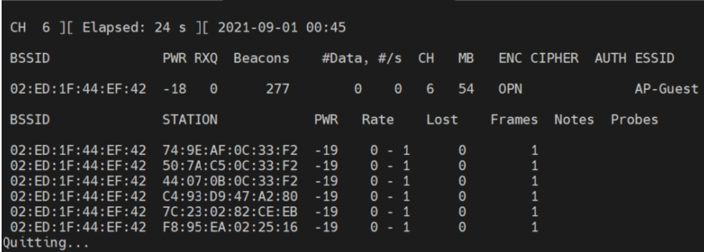

Cuáles son los dispositivos conectados al 1er Access Point (AP-Guess - está abierto)
Esto es relativamente fácil de realizar, primero haremos uso de la herramienta airdump-ng para detectar los APS que tenemos en la zona, lo realizaremos por medio de la wlan0 que es la interfaz que configuramos en modo monitor.
airodump-ng wlan0

Visto y detectado el objetivo de nosotros que es el AP-GUESS, podremos ver su BSSID, con el cual vamos a realizar el próximo ataque que nos dará lo que queremos. El BSSID de nuestro AP objetivo fue el siguiente, 02:ED:1F:44:EF:42, ahora con el siguiente comando, vamos a detectar todos los dispositivos que se encuentran conectados a esa red, solo tenemos que ejecutar lo siguiente.
airodump-ng --bssid 02:ED:1F:44:EF:42 --channel 6 --write cap wlan0
Con este comando obtenemos el siguiente resultado:

Obteniendo las MACS de todos los dispositivos de esa red, el siguiente paso es identificar los dispositivos, en mi caso las marcas de estos, yo lo obtuve por medio de la siguiente página. Mac Address an OUI Lookup
Info
74:9E:AF:0C:33:F2: Apple, Inc.
50:7A:C5:0C:33:F2: Apple, Inc
44:07:0B:0C:33:F2: Google, Inc
C4:93:D9:47:A2:80: Samsung Electronics Co.,Ltd
7C:23:02:82:CE:EB: Samsung Electronics Co.,Ltd
F8:95:EA:02:25:16: Apple, Inc
Con esto ya hemos completado el reto número 1 :)